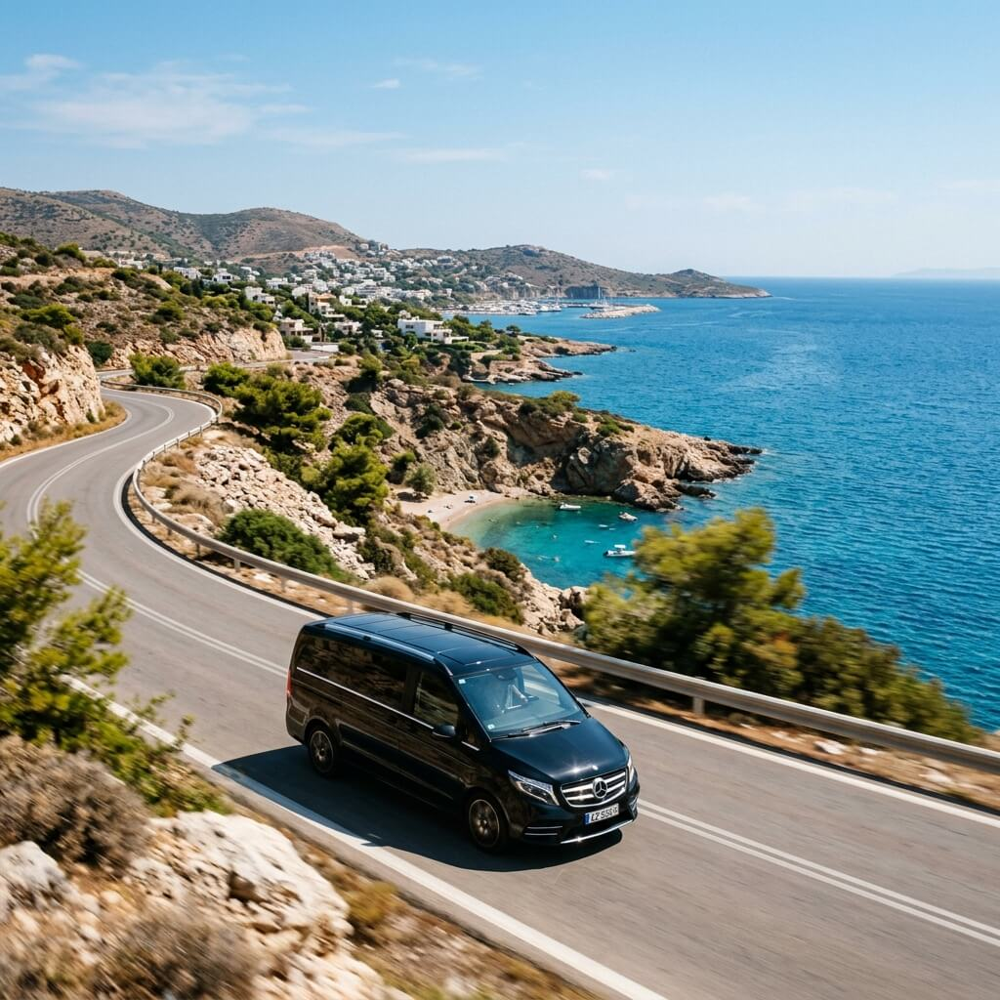
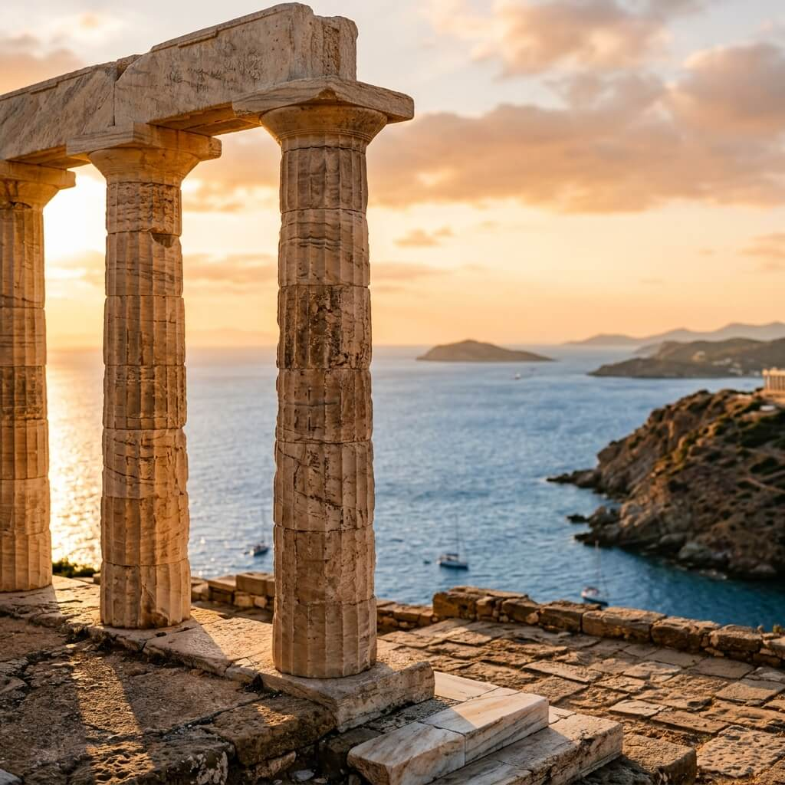

Taxi & Van Transfers
חוו את השקיעה המיסטית ביותר. מסלול פנורמי לאורך הריביירה המרהיבה של אתונה.
סעו לאורך חופי אתונה למסע המשלב את היוקרה של הריביירה של אתונה עם הוד ההיסטוריה העתיקה. היעד שלנו הוא כף סוניו, שם מקדש פוסידון ניצב על צוק בגובה 60 מטר, ושומר על הים האגאי כבר יותר מ-2400 שנה.
תיהנו מעצירות בחופים קוסמופוליטיים, תראו את אגם ווליאגמני הטרמי והמסתורי ותסיימו את היום בצפייה באחת השקיעות המפורסמות בעולם, בדיוק במקום בו המלך אגאוס חיכה לשובו של בנו תזאוס.
התצפית הטובה ביותר על הים האגאי
מסלול חופי פנורמי
הנהג הפרטי שלכם ייקח אתכם דרך האזורים היוקרתיים ביותר של חופי אתונה (גליפאדה, וולה, וארקיזה), תוך הנאה מנוף הים לאורך כל הדרך.
נעצור להתפעל מהתופעה הגיאולוגית המרשימה הזו: אגם טרמי טבעי המוקף במערות ובצוקים אדירים.
נעלה למקדש פוסידון. גלו את עמודי השיש האדירים וחפשו את חתימתו של המשורר המפורסם לורד ביירון החרוטה על אחד מהם.
שיא הטיול: הירגעו ותיהנו מהשמש הצוללת לתוך הים האגאי וצובעת את המקדש ואת השמיים בגוונים של זהב וסגול.

